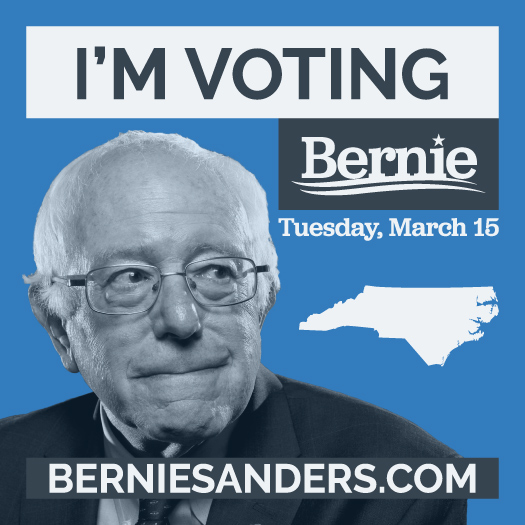
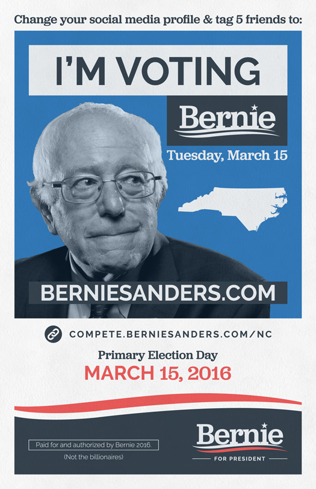

NC Social Media Avatar
The campaign promoted a social media competition to encourage support for Bernie and remind voters of the upcoming Democratic primaries.
Voters were able to change their profile pictures to one of several avatars, which I created under the direction of the national campaign.


Charlotte, NC Rally Flyer
Volunteers handed these half-sheet flyers out by the thousands during the March 14th rally.
State-specific variants were used at other rallies to spread awareness of each state's social media competition.